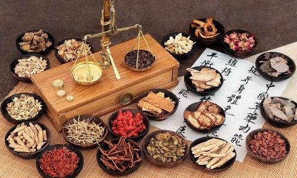
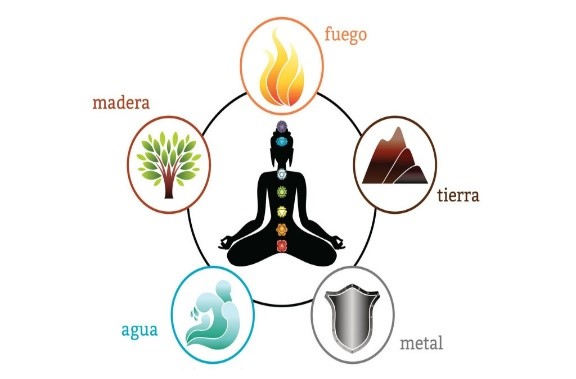

- El Qi o la fuerza vital
 El Qi (se pronuncia “chi”), se define generalmente como la energía vital que fluye por el cuerpo de todo ser viviente. La traducción literal de este carácter chino significa “moldeado por la energía de la naturaleza”. Los chinos creían que el Qi permeaba todo y que establecía un lazo entre su cuerpo y el medio ambiente circundante. El concepto del Qi está profundamente enraizado en la medicina tradicional china. El concepto fue observado por primera vez en las escrituras más antiguas de la medicina tradicional china, aptamente nombrada “Escritura interna”. El concepto es que la energía vital circula por nuestro cuerpo a través de vías conocidas como “meridianos”. Se cree que los síntomas o enfermedades manifiestas son resultado de un Qi bloqueado, alterado o desequilibrado que se mueve a través de nuestros meridianos. Se piensa que un Qi que fluye adecuadamente es el responsable de muchos aspectos de la salud. Por lo tanto, uno de los principales enfoques de la medicina tradicional china es el desbloqueo del Qi para que circule adecuadamente por nuestro cuerpo.
- Tipos de Qi
 Como se mencionó anteriormente, el Qi es la energía que se mueve a través de nuestro cuerpo y del mundo que nos rodea. Pero puede haber otras energías que pueden afectar esa fuerza vital en circulación. Los antiguos filósofos chinos y otros practicantes orientales se basaron en esta noción del Qi y posteriormente postularon la existencia de subfracciones de Qi. Hablando en términos generales, las principales subcategorías del Qi que se establecieron fueron las siguientes: Qi original, relacionado con la genética y la constitución celular. Qi pectoral, relacionado con el metabolismo, consiste de factores externos como el aire y los alimentos. Qi nutritivo, relacionado con la alimentación y otros factores nutritivos y el Qi defensivo, relacionado con la defensa contra el mundo exterior o salud inmunológica El término está extendido también en otros países de Extremo Oriente como Corea, Japón y otros, siendo frecuente su transcripción como chí o chi'i. El concepto chino respecto a la qì o chí similar a conceptos occidentales como energeia, magnetismo animal, élan vital o energía vital (vitalismo), también es muy semejante al concepto hindú del prāṇa aunque el prāṇa es considerado principalmente una energía que desde el aire respirable se adquiere en la respiración, mientras que el concepto chino del qì se entiende también como la energía del macrocosmos (todo el universo), en el microcosmos (el cuerpo humano y su psique). Sin embargo en la tradiciónes de la India, como el Yoga y el Tantra, tal energía ha sido entendida más como un factor místico (los cuerpos supra-racionales son de hecho un continuum del qì o prāṇa) aunque tenga derivados en la medicina ayurveda; en cambio en la MCT (Medicina China Tradicional) el qì o la chí ha llegado a ser entendida como la energía cósmica circulando de un modo polarizadamente reciproco (yin/yang) en el cuerpo de todo ser viviente y que la armoniosa y continua circulación de tal energía llamada qì (o, ch'i) mantiene a la salud del cuerpo y de la psique mientras que una alteración del circuito energético corporal (ya que la qì discurre principalmente por kin o "canales" o "meridianos" naturalmente ordenados, teniendo nodos o "puntos" clave llamados xue, que se evidencian principalmente en la dermis).